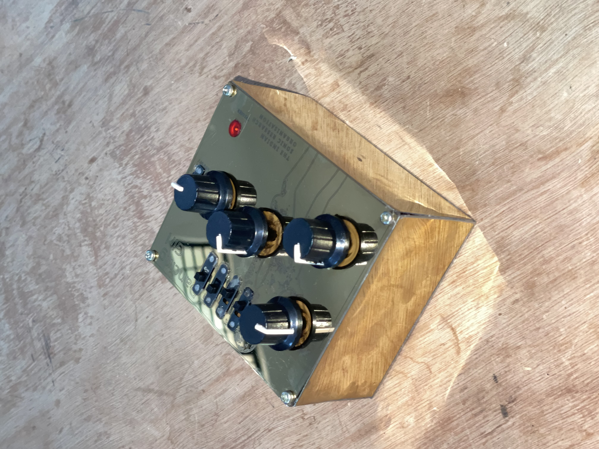

← Home
Analog Circuits
A collection of open source DIY synthesizers:
The weird sound generator has 2 analog oscillators, 2 LFOs (Goes in audio speed) and a filter.
3 schmitt trigger circuits combining which can be manipulated using potentiometers and Light Dependent Resistors.

A feedback circuit based on the PAM8403 amplifier IC. The capacitors in the circuit make the sound rhythmic.

The circuit was printed using the open source PCB Sparkfunk. An enclosure was made for the circuit using aluminium.


The circuit uses a light dependent resistor to control the wavelength of the waveform.